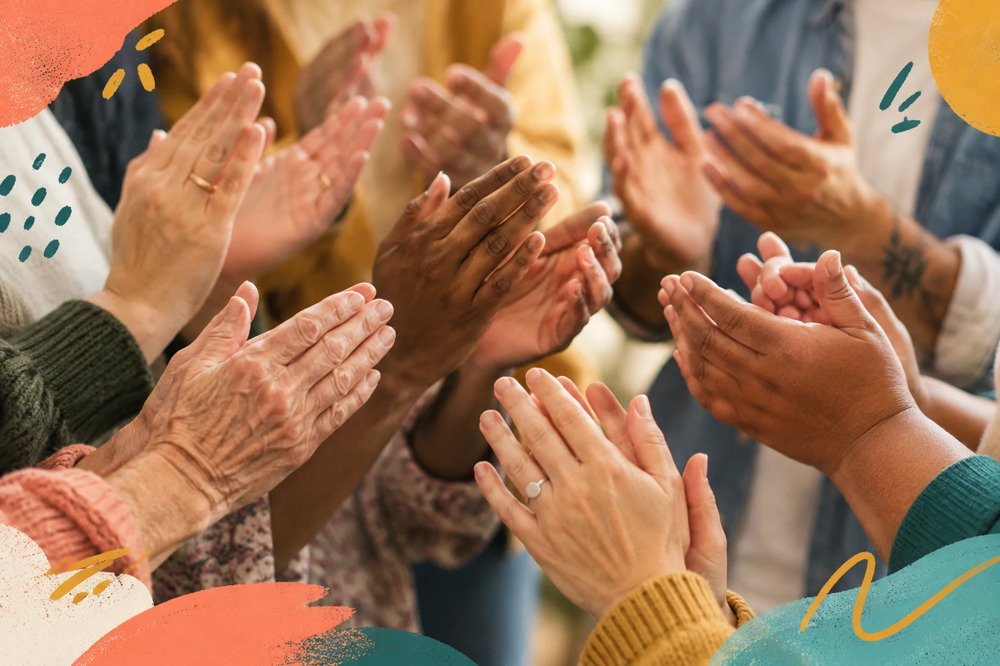

You don’t need the perfect words
Need a hand?
Free, one-to-one mentoring, starting with what interests or matters to you. Bring a question, an idea or something you’d like to try. We’ll explore how technology and AI could help, at your pace.
The first conversation and mentoring are free. We’ll reply to discuss availability; there’s no need to commit to sessions.

A conversation first.
Get in touch by email or telephone. Supporting people across Dorset by Zoom or telephone, with in-person visits by arrangement. Zoom can be with your camera on or off. We can also visit charities, food banks and community organisations to mentor people there. All meetings are agreed in advance. There’s no pressure to share personal history or commit to sessions.
Email us ↗aha@happyish.org.ukCall 07731 384953These are the current contact details for HAPPYISH LTD.
Your pace and choices are protected by your Bill of Rights →When you need urgent or specialist help
Happyish is not an emergency service and does not replace medical, legal, financial or other regulated professional advice. For an immediate emergency in the UK, call 999. Where specialist support is needed, we can discuss an appropriate next step and help you prepare for that conversation. If you have a concern about Happyish’s support or an accessibility barrier, use the contact details above. This is not a confidential crisis or safeguarding reporting service. For urgent mental-health support, see our urgent support page.